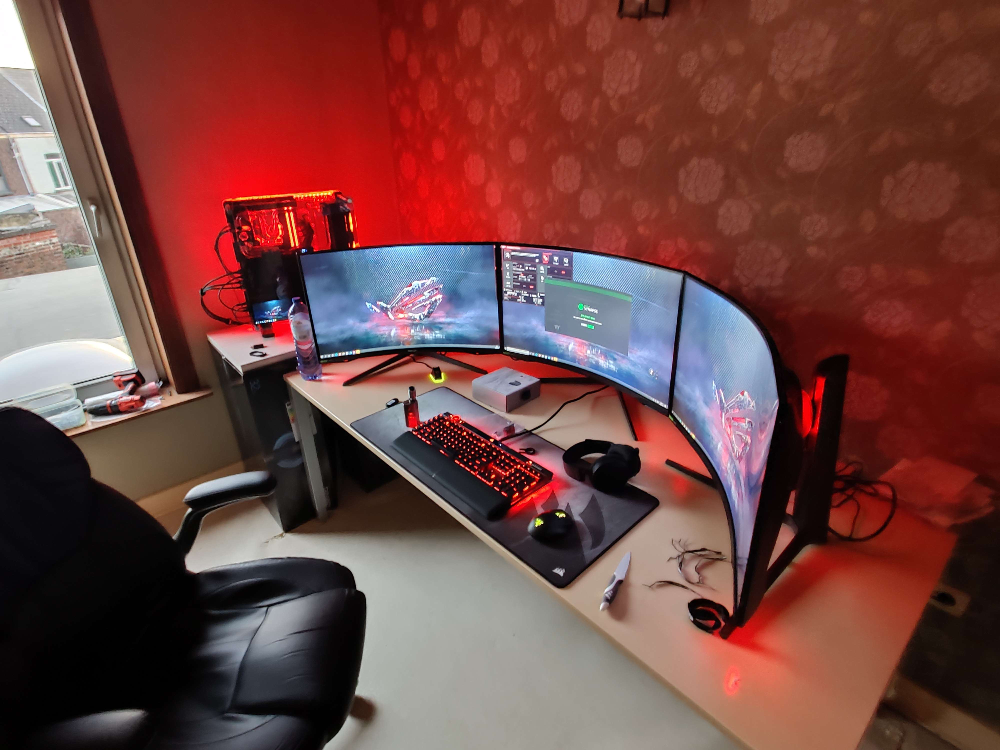
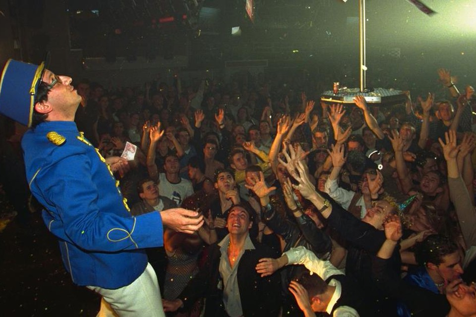
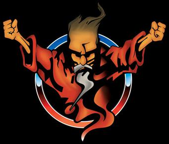
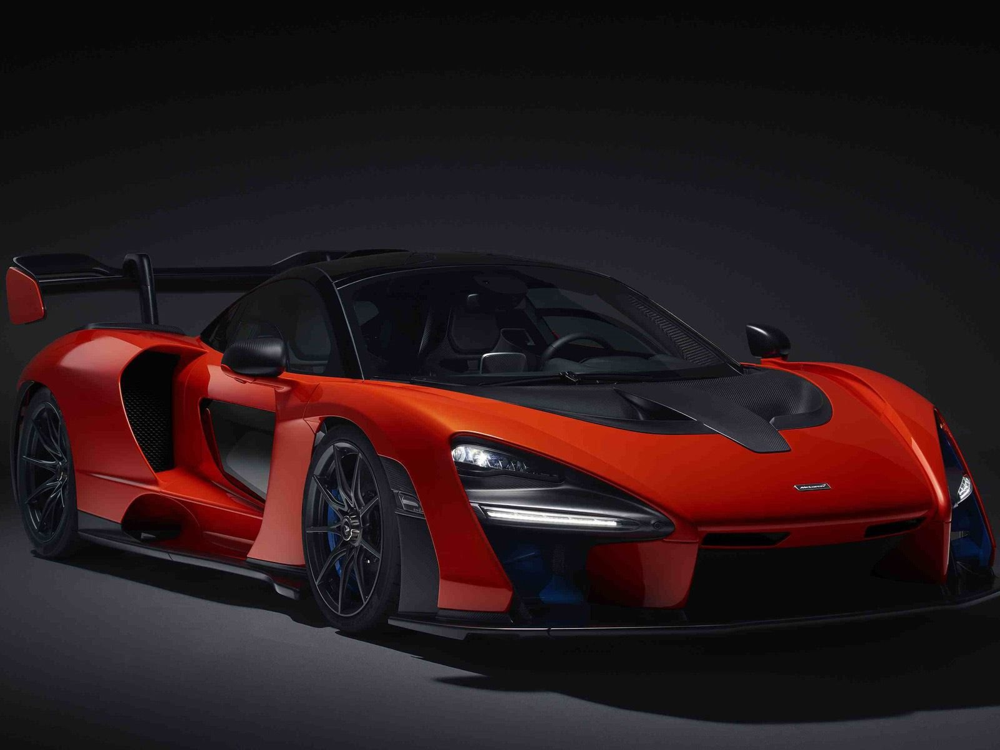
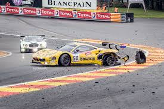

Mijn hobbies
: Al sinds mijn tienerjaren ben ik in de ban van games, dit gaat van offline tot online games.
Een van de eerste games dat ik speelde was Red alert, Cs 1.16 en UT 2004. Tegenwoordig ligt mijn
voorkeur meer bij het RPG-gerne en factory games zoals:- World of warcraft
- Starfield
- Satisfactory
- And many many more...
Mijn battlestation

- Muziek: Een wereld zonder muziek kan ik me niet voorstellen, het is een groot stuk van mijn dagelijkse
leven, vooral in da auto en thuis tijdens het maken van bv huiswerk.
Mijn muzieksmaak ligt heel breed dit gaat van metal tot techno (bv de oude muziek van La Bush) en
ook de zwaardere versie van techno, beter bekend als hardcore
  - Auto's: Deze hobby gaat meer over zelf met de wagen rijden dan naar motorsport te kijken. Niettegenstaande ga ik graag
wel eens naar de 24h van spa of zolder. Daar kan je dan de auto's bewonderen die niet betaalbaar zijn voor de gewone mens.  
Persoonlijke informatie
- Gunar Van Londersele
- Highway to hell 666
7th layer of Hell - 04XX:XX.XX.XX
- My Mail